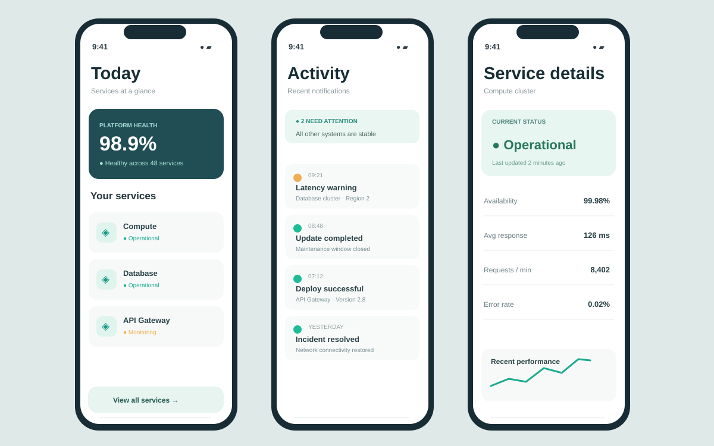

Atlas / Service companion
A mobile experience designed around short, focused operational check-ins. Three connected screens provide the essentials: overall health, activity history, and a detailed view of one service.

Project overview
A mobile experience designed around short, focused operational check-ins. Three connected screens provide the essentials: overall health, activity history, and a detailed view of one service.
The challenge
On a small screen, system notifications can easily overwhelm the user. The challenge was to preserve a clean hierarchy, prioritize actionable information, and keep common status-check tasks easy to complete.
Design approach
The concept uses a restrained palette, prominent system states, scannable list items, and a clear divide between summaries and detail. Every main screen is represented: home, activity, and service detail. Metrics and events are illustrative.
What the concept includes
- Home screen with platform health and service cards
- Activity timeline distinguishing warnings and resolutions
- Service details with current status and key metrics
Design in detail.
Designed for clarity and consistency.
On a small screen, system notifications can easily overwhelm the user. The challenge was to preserve a clean hierarchy, prioritize actionable information, and keep common status-check tasks easy to complete.